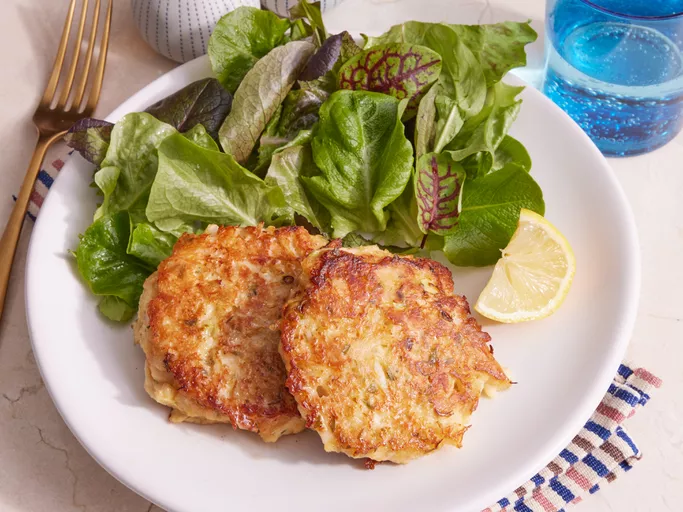

Crab Cakes

Description
These crab cakes are easy to make
and the best I've ever eaten!
Their firm yet fluffy texture will allow you
to try a little piece of crab heaven.
Serve with coarse mustard on the plate
or your favorite mustard sauce.
Ingredients
- 1 large egg
- 3 tablespoons of mayonnaise
- 1 tablespoon minced green onions
- 4 teaspoons lemon juice
- 1 teaspoon dried tarragon
- 1/8 teaspoon red pepper flakes
- 8 ounces of crabmeat
- 1/2 cup crushed buttery round crackers
- 1 tablespoon butter
Steps to Make the Dish
- Gather all ingredients.
- Whisk egg, mayonnaise, green onions,
lemon juice, tarragon, and pepper flakes
together in a medium bowl.
- Gently stir in crabmeat,
being careful not to break up meat.
- Gradually mix in cracker crumbs,
adding until desired consistency
is achieved.
- Form crab mixture into 4 patties.
- Heat butter in a skillet over medium heat.
Cook patties in the skillet until golden brown,
5 to 6 minutes on each side.
- Serve and enjoy!